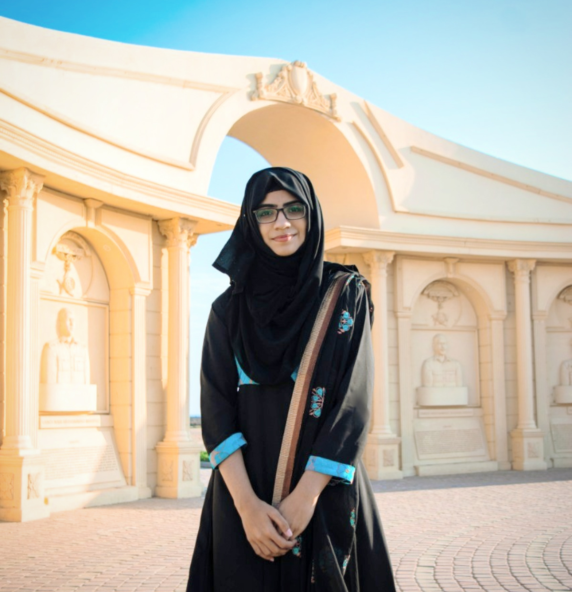

EISHA TIR RAAZIA
About
Projects
Blog
Connect With Me
EISHA TIR RAAZIA
Karachi Chapter Lead @PWiC | GHC'2020 Scholar | BS(CS)'2021 @FAST NUCES 🔸DataScience 🔸AI 🔸Research 🔸SWE | ✨Communities & Outreach
